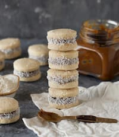

מתכון מנצח לאלפחורס
עוגיות סנדוויץ' נימוחות (דרום אמריקאיות) במילוי ריבת חלב ומעטפת של קוקוס
מצרכים
- 100 גרם חמאה רכה חתוכה לקוביות
- שליש כוס סוכר
- 2 חלמונים
- חצי כפית תמצית וניל
- 2 כפות חלב
- כוס קמח תופח
- 3/4 כוס קונפלור
- ממרח ריבת חלב
- שליש כוס קוקוס לציפוי
שלבי ההכנה
הכנת הבצק
- מקציפים במיקסר את החמאה עם הסוכר במשך כחצי דקה. מוסיפים את החלמונים ומערבבים. מוסיפים תמצית וניל וחלב ומערבבים.
- מוסיפים את הקמח והקורנפלור ומערבבים עם המיקסר. לאחר מכן לשים מעט עם הידיים עד לקבלת בצק אחיד, רך ונוח לעבודה
- מחממים תנור מראש ל175 מעלות.
הכנת העוגיות
- פורשים נייר אפיה על משטח עבודה ומרדדים את הבצק לעובי של כחצי ס"מ. קורצים עיגולים בקוטר של כ-4 ס"מ (בעזרת קורצן עוגיות או כוס קטנה הפוכה). מרפדים את תבנית התנור בנייר אפיה ומניחים את העוגיות במרווחים קלים

- מקמחים את הבצק ויוצרים כדור, מכניסים לקערה ונותנים לו לתפוח במקום חמים תחת מגבת לחה כ-45-50 דקות – עדאופים בתנור במשך 9-10 דקות, עד שהעוגיות מתייצבות אך עדיין רכות. מוציאים מהתנור ומניחים לעוגיות להתקרר לגמרי.
- לאחר שהעוגיות התקררו הופכים את מחציתן ומניחים על כל עוגיה כחצי כפית ממרח ריבת חלב. סוגרים עם עוגיה נוספת (בדומה לסנדוויץ') ולוחצים קלות מה שגורם לממרח לצאת לשוליים (זה מה שבעצם מסייע להדבקת הקוקוס). מגלגלים כל עוגיה בקוקוס.